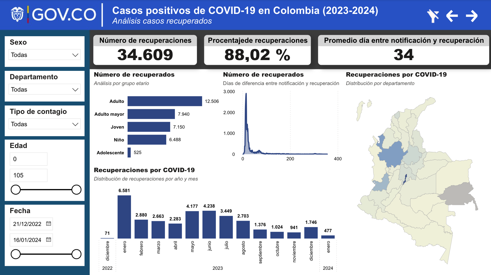
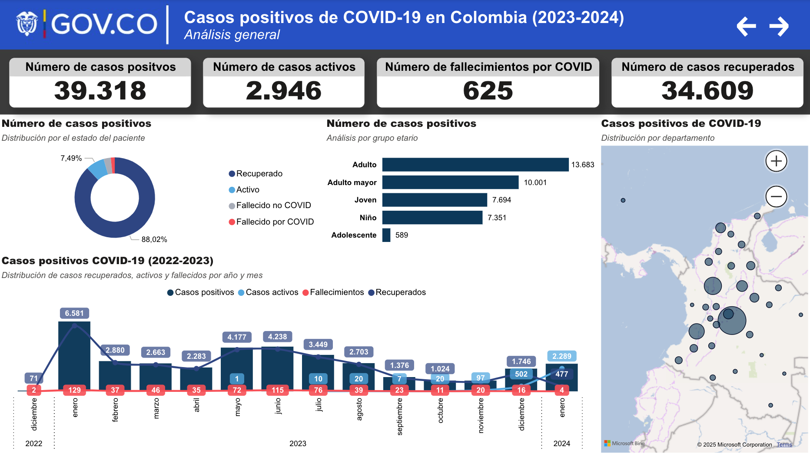
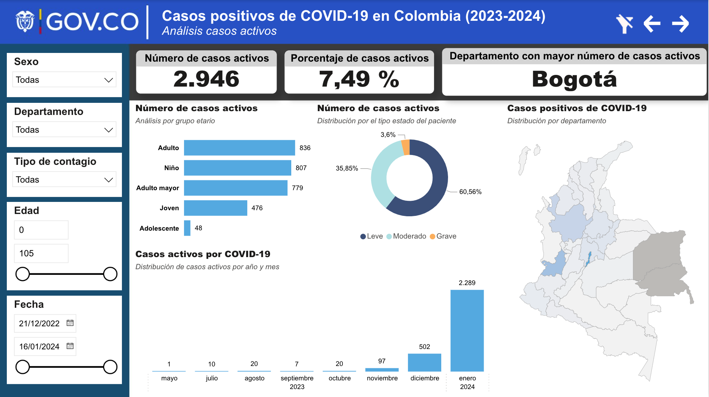
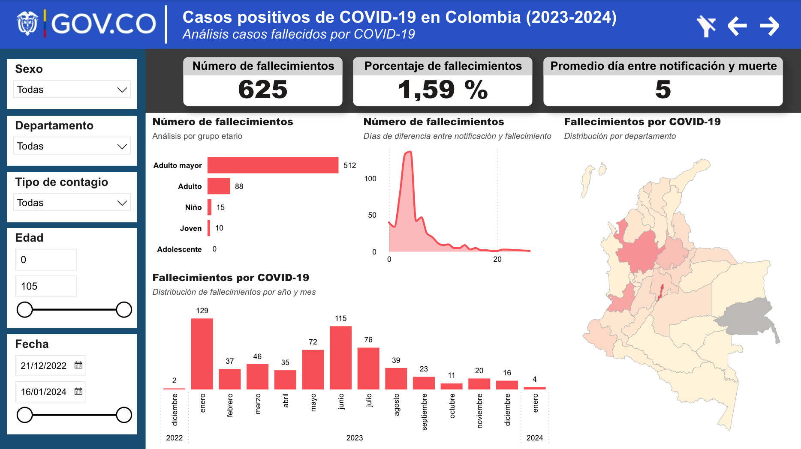
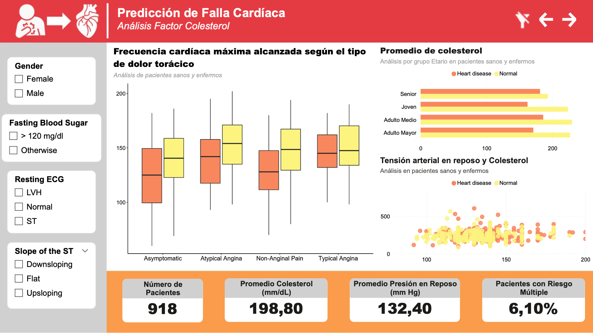
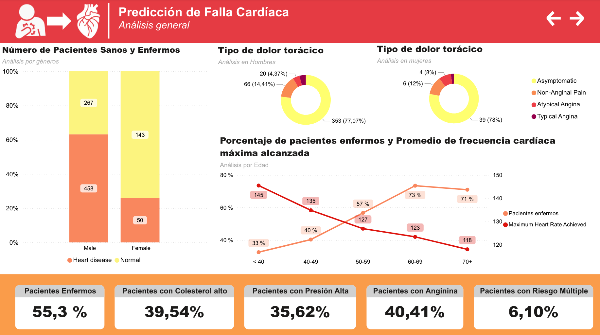
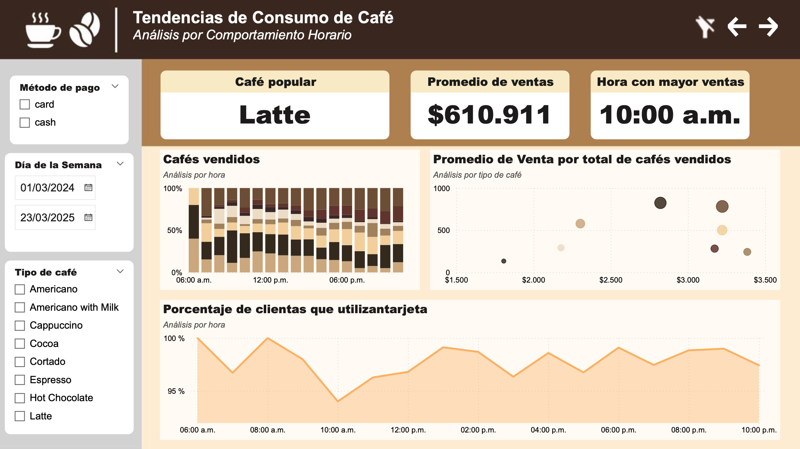
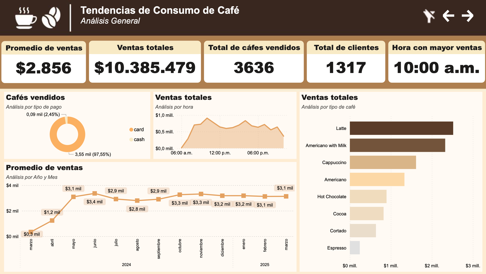
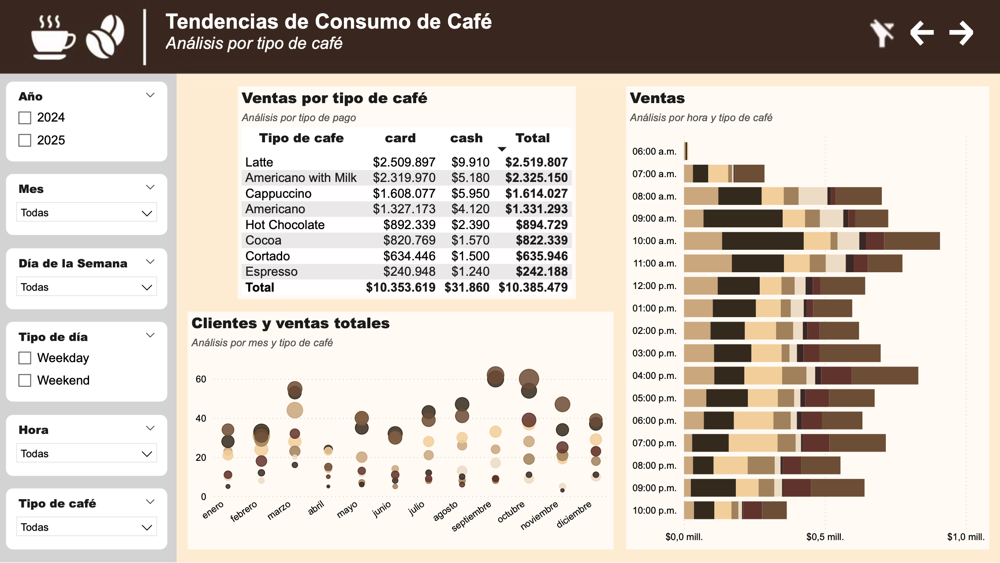

Data Analysis Projects
Here you will find a collection of data analysis projects that showcase the application of statistical and computational tools to extract meaningful insights from complex datasets. These projects span topics ranging from public health to exploratory business analytics, and highlight techniques such as data cleaning, visualisation, and dashboard development. Each project is designed to communicate findings clearly and effectively, using tools like Excel, Python, R, and Power BI.
Spatial and Demographic Trends of COVID-19 in Colombia (2023–2024)
This project explores the spatial, demographic, and clinical evolution of COVID-19 in Colombia throughout 2023 and 2024. Leveraging national epidemiological data, the analysis tracks the progression of confirmed cases, recoveries, active infections, and deaths across departments and municipalities. The dashboard integrates patient-level variables such as age, sex, ethnicity, and clinical status to uncover patterns in health outcomes over time and across population subgroups. By combining geographic and demographic insights, this project provides evidence to better understand the impact of the pandemic across regions and inform targeted public health interventions.
General aim
To analyse the geographic, temporal, and demographic distribution of COVID-19 cases, recoveries, and fatalities across Colombia during 2023–2024, identifying public health trends and potential risk factors
Key Findings
High recovery rate: Approximately 88% of confirmed cases resulted in recovery, with an average recovery time of 34 days. This may reflect the effectiveness of mass vaccination programmes and improved clinical management in reducing severe outcomes.
Low but rapid mortality: Only 1.6% of cases resulted in death, yet the average time between diagnosis and death was just 5 days, highlighting the need for early clinical attention and rapid response in high-risk patients.
Geographic concentration: The departments of Bogotá, Antioquia, and Valle del Cauca consistently reported the highest numbers of positive, active, recovered, and deceased cases.
Temporal spike in infections: A significant increase in active cases occurred in January 2024, coinciding with over 2,000 new infections. This peak may be associated with the post-holiday period and increased travel or social interaction.
Age-related outcomes: Adults (35–64) and older adults (65+) experienced the highest mortality and recovery counts, suggesting both greater vulnerability and higher clinical detection in these age groups. This reinforces the importance of age-targeted interventions.
No strong demographic disparity by sex or ethnicity: Contrary to expectations, the data did not show significant differences in outcomes based on sex or ethnic background, suggesting equitable disease impact across these ethic gropus during the analysed period.
Dashboard




Cardiovascular Risk Patterns in Clinical Profiles: Cholesterol, Age, and Heart Disease Outcomes
This project explores the clinical and demographic patterns associated with cardiovascular risk in a population-based sample of 918 patients. The analysis focuses on how cholesterol levels, resting blood pressure, chest pain type, and ECG results interact to signal the presence of heart disease. Using an interactive dashboard, users can examine trends across age groups, gender, and symptom profiles to better understand the distribution and correlation of key cardiac indicators. Variables such as fasting blood glucose, ST slope, and maximum heart rate were integrated to highlight the complexity of cardiac risk and patient stratification.
General aim
To investigate the relationship between elevated cholesterol and other cardiovascular markers (e.g., chest pain, blood pressure, ECG type) in predicting the presence of heart disease across different age and gender groups.
Key Findings
High cholesterol is common: 39.5% of patients had cholesterol above the recommended threshold, particularly among older adults with diagnosed heart disease.
Disease is age-dependent: Heart disease prevalence increased steadily with age, reaching 73% in the 60–69 age group, and was notably more frequent in males (76%) than in females (25%).
ECG and blood pressure combine with cholesterol: A subset of 6.1% of patients showed combined risk factors, elevated cholesterol, high systolic pressure, and abnormal ECG, suggesting the need for targeted preventive care.
Chest pain patterns reveal risk segmentation: Patients with typical angina and asymptomatic individuals exhibited differing heart rate profiles, particularly in diseased groups, which may aid differential diagnosis.
Maximum heart rate declines with age and disease burden: There was a visible negative association between age and maximum heart rate, and patients with heart disease consistently achieved lower heart rate peaks than those without the condition.
Dashboard


Coffee Consumption Trends (2024–2025): Temporal and Product-Based Insights
This project examines the temporal and behavioural dynamics of coffee consumption between March 2024 and March 2025. Using transactional data to explore sales dynamics by product type, purchase method, and time of day. The dashboard visualises hourly consumption patterns, highlights peak demand periods, and disaggregates preferences by coffee variety (e.g., espresso, latte, cappuccino). The analysis also considers the impact of customer choices and purchasing modes on daily sales rhythms. These insights are intended to support evidence-based decisions in stock management, staffing schedules, and product marketing strategies across cafés and retail chains.
General aim
To examine purchasing patterns of coffee by hour, type, and payment method in order to identify consumption trends and customer behaviour across different times of day and coffee categories during 2024–2025.
Key Findings
Most Popular Coffee Types: Latte emerged as the most purchased item across the year, followed by Americano with Milk and Cappuccino. These three products together accounted for the largest share of sales, highlighting a preference for milk-based beverages.
Peak Consumption Hours: Coffee consumption was heavily concentrated between 8:00 a.m. and 12:00 p.m., with a pronounced peak at 10:00 a.m., suggesting that consumer habits are tied to mid-morning routines, possibly aligned with work breaks or commuting patterns.
Payment Preferences: Over 97% of transactions were conducted in card, indicating either a customer preference for this pay method.
Monthly Sales Trends: Revenue showed a consistent growth pattern during the first half of the period, reaching a peak of approximately $3,100/month by mid-2024. This stability suggests a loyal customer base and sustained demand throughout the year.
Product Strategy Implication: The high sales concentration among a few coffee types suggests that inventory and promotional strategies can be focused around the top-selling items, especially during morning hours.
Dashboard


